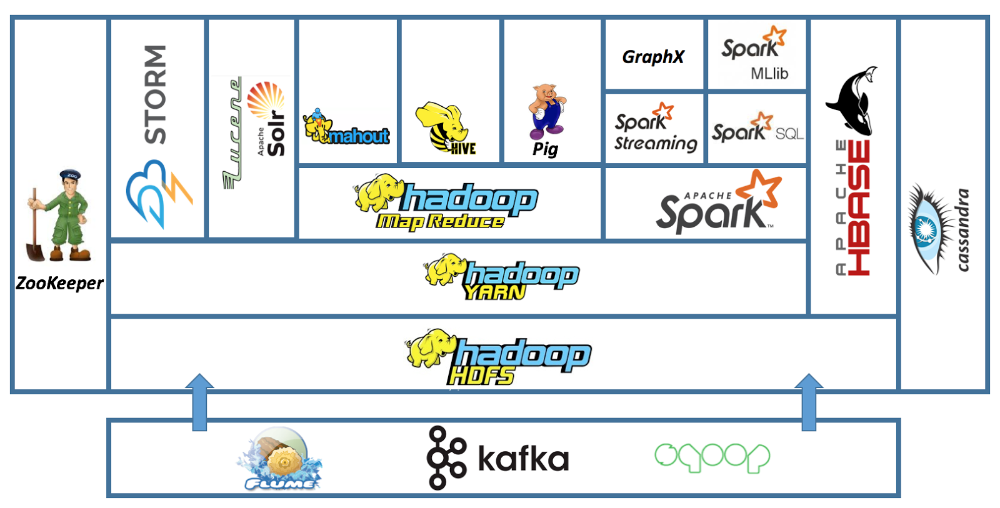

App displays current news articles from a wide variety of newssources covering a range of news categories. Features like Top 10 stories, Clickable article title, text.
Click Here
Civil Advocacy App
App acquires and displays interactive list of political officials that represent the current location (or a specified location) at each level of government.Features: OfficialPhoto, Official Address, Facebook, Twitter,Youtubelinks. Implemented Location Services, Internet, GoogleAPIs, Images, Picasso Library, Implicit Intents, TextView Links.
Click Here
Stock Assistant App
App allowed users to see sorted list of stocks including stock symbol, company name, current price,daily price change and percent change. Features : Adding, Deleting, Searching, Swipe Refreshing stocks over internet.Implemented Internet service, Recycler View, Option-Menus, Multiple AsyncTasks, JSON Data, Swipe-Refresh, Dialogs, SQLite Database.
Click Here
Health Hub: One-stop Medical Solutions for all your medical needs
Developed an e-commerce website using server-side Java technologies for Health Hub services online.
o Three perspectives of user login/interactions defined- Customer, Admin and salesman.
o Integrated API's like Google Visualization API and Twitter API for recommendation service.
o Technologies Used: Java, JavaScript, JSP, HTML, CSS, JDBC, MySQL, MongoDB, Jupyter Notebook (Python), JSON, Tomcat, Google Visualization, AJAX, jQuery, SAX parser, XML, Neo4j.
Click Here
Hadoop Terasort Benchmarking on AWS cloud
Accomplished a JAVA application which performs external sort with multi-threading based on user’s preference for Hadoop Cluster and local Linux machine.
Click Here
Database Management System
Designed and developed a database management system using C which supports functionalities such as-
o Storage Manager which allows read/writing of blocks to/from a file on disk.
o Buffer Manager which manages page blocks in memory including reading/flushing to disk and block replacement.
o Record Manager which is used to perform CRUD operations also developed a disk-based B+-tree index structure.
Click Here

Deployed Enterprise Hadoop cluster and its components on AWS Cloud
Deployed a Hadoop Cluster and its components through Cloudera Manager on AWS. Hands-on experience in installation, configuration, administration, and troubleshooting Hadoop distribution using Terminal and Cloudera.
Click Here
Object Detection in
Point Cloud: Poles
Object detection in Point Cloud is popular in HD Map and sensor-based
autonomous driving.
There are basically four types of object you can obtain in daily scenario:
Road surface - painted lane marking and pavement area
Support facility - road boundary, road sign, light pole, etc.
Uncorrelated object - sidewalk, building, etc.
Moving objects - pedestrian, vehicle, bicycle, etc.
The goal of this project is to detect light poles.
Automatically detecting any of these is a very useful exercise
Click Here